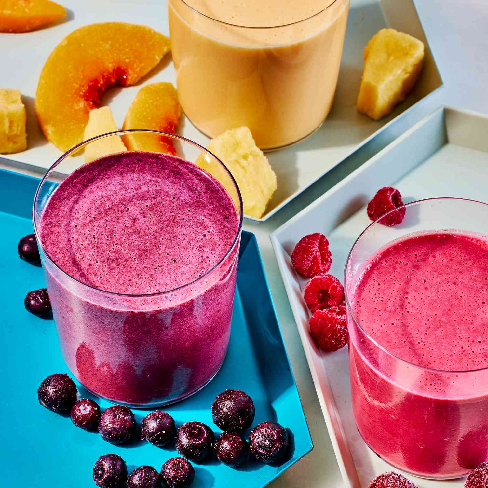

Smoovies

Description
I originally made this strawberry banana smoothie for Jack. He's a smoothie guy no matter what temperature it is outside.
But I've been waking up extra parched lately, so this fruity berry smoothie goodness has really been hitting the spot.
Ingredients
- 1 1/2 cup raspberries
- 1 cup strawberries
- 1/2 frozen banana
- 1 cup almond milk, or oat milk
- 1 tablespoon honey or maple syrup
- 1 1/2 cups ice
- Handful of mint or basil, optional
Steps
- Combine the raspberries, strawberries, banana, almond milk, honey or maple, basil, if using, and ice in a blender. Blend until smooth.
- Taste. If it's too tart for you, add another 1/2 cup or so of almond milk and another tablespoon of honey or maple.